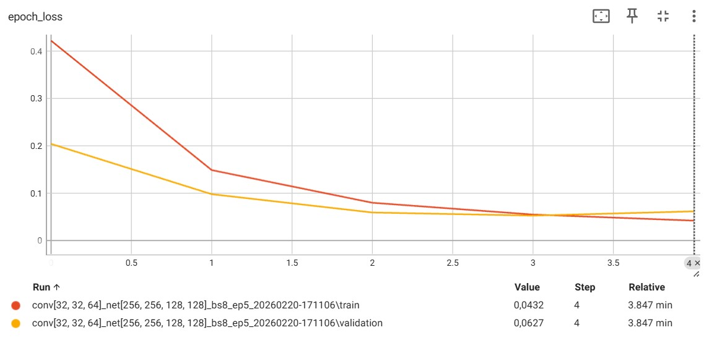

Detecting the drowsiness at the wheel
Made for the national competitive exam to enter the French Engineering Schools, this project is a research on the theme “Health and Prevention” and presents two methods to monitor drivers’ drowsiness. The first method uses an ECG sensor to measure the heart rate of the driver and the second implements a CNN to detect if the eyes are open or closed. The data used for this second method is the MRL Eye dataset and can be found here MRL Eye Dataset
Show the presentation of the project
Show the slides for the restitution
Import of the dataset
The first tasks in order to create the neural network capable to detect the state of the eyes was to download the MRL Eye Dataset and to convert it into a binary format. Indeed, the dataset came with two folders each with each picture of eyes open or closed (in the .jpg format), but, for practical reasons, I wanted to have a unique file with all the pictures. Since, an array with all the images was to heavy, I decided to use the .pickle format in order to store the dataset.
Show the dataset creation in the pickle format
##################################################
############# IMPORTS #############
##################################################
import numpy as np
import cv2
import random as rd
import pickle # Conversion python objects into binary
import os
from tqdm import tqdm
##################################################
############# CREATION DATASET #############
##################################################
DATADIR = "DATASET"
CATEGORIES = ["close", "open"]
IMG_SIZE = 100
training_data = []
def create_training_data():
for category in CATEGORIES:
path = os.path.join(DATADIR,category)
class_num = CATEGORIES.index(category)
for img in tqdm(os.listdir(path)):
img_array = cv2.imread(os.path.join(path,img) ,cv2.IMREAD_GRAYSCALE)
new_array = cv2.resize(img_array, (IMG_SIZE, IMG_SIZE))
training_data.append([new_array, class_num])
create_training_data()
rd.shuffle(training_data)
feature_list, label_list = zip(*training_data)
feature_list, label_list = list(feature_list), list(label_list)
feature_list = np.array(feature_list).reshape(-1, IMG_SIZE, IMG_SIZE, 1) # -1 unknown number of images, IMG_SIZE for the shape of the image, 1 for the grayscale
##################################################
############# SAVE DATASET #############
##################################################
pickle_out = open("feature_list.pickle","wb") # wb for writing in binary mode
pickle.dump(feature_list, pickle_out) # creates a binary copy of feature_list and puts it in pickle_out
pickle_out.close()
pickle_out = open("label_list.pickle","wb")
pickle.dump(label_list, pickle_out)
pickle_out.close()
Training of the neural networks
Once I have my dataset stored in the right format, I can upload it to implement the training of various neural networks. I tried several different structures for the neural network, varying the number of layers in the convolutional layers, the number of neurons per fully-connected layer, the batch_size of the training and finally the number of epochs. What remained constant across all trainings was the kernel of the convolution layers (3x3), the activation function relu, the kernel of the maximum pooling (2x2), the loss function binary_crossentropy, the optimizer sgg and the metric accuracy.
Show the training of the neural networks
##################################################
############# IMPORTS #############
##################################################
import pickle
import cv2
import numpy as np
import random as rd
import os
import datetime
# Import tensorflow for neural networks
from tensorflow.keras.models import Sequential
from tensorflow.keras.layers import Dense, Flatten
from tensorflow.keras.layers import Conv2D, MaxPooling2D
from tensorflow.keras.callbacks import TensorBoard
##################################################
############ CREATION TEST DATASET #############
##################################################
DATADIR = "DATASET2"
CATEGORIES = ["close", "open"]
IMG_SIZE = 100
test_data = []
def create_test_data():
for category in CATEGORIES:
path = os.path.join(DATADIR,category)
class_num = CATEGORIES.index(category)
for img in os.listdir(path):
img_array = cv2.imread(os.path.join(path,img) ,cv2.IMREAD_GRAYSCALE)
new_array = cv2.resize(img_array, (IMG_SIZE, IMG_SIZE))
test_data.append([new_array, class_num])
create_test_data()
rd.shuffle(test_data)
##################################################
############ CREATION TEST FUNCTION ############
##################################################
def test_perf():
c=0
for (image,label) in test_data:
image=image.reshape(-1, IMG_SIZE, IMG_SIZE, 1)
prediction = model.predict([image])
if round(prediction[0][0])==label:
c+=1
return (c/len(test_data))
##################################################
############## LOAD DATASET ###############
##################################################
feature_in = open("feature_list.pickle","rb")
feature_list = pickle.load(feature_in)
feature_list = feature_list/255.0 # Normalize between 0 and 1
label_in = open("label_list.pickle","rb")
label_list = pickle.load(label_in)
label_list=np.array(label_list)
##################################################
############## CNN STRUCTURE ##############
##################################################
networks=[[256, 256, 128, 128]]
convolutions=[[32,32,64]]
batch_sizes=[8]
epochs=[5]
def create_convolution_layers(convolution):
for layer in convolution:
model.add(Conv2D(layer, (3, 3), activation = 'relu', input_shape = feature_list.shape[1:]))
model.add(MaxPooling2D(pool_size = (2, 2)))
def create_fully_connected_layers(network):
for layer in network:
model.add(Dense(layer,activation = "relu"))
##################################################
############## CNN TRAININGS ##############
##################################################
PERFORMANCE=[]
for network in networks:
for convolution in convolutions:
for batch_size_chosen in batch_sizes:
for epoch_chosen in epochs:
model = Sequential()
create_convolution_layers(convolution)
model.add(Flatten()) # To convert our 3D feature to 1D feature
create_fully_connected_layers(network)
model.add(Dense(1, activation = "sigmoid")) # Only one neuron: activated=open / inactivated= close
model.compile(loss = 'binary_crossentropy', optimizer = 'sgd', metrics = ['accuracy'])
run_name = f"conv{convolution}_net{network}_bs{batch_size_chosen}_ep{epoch_chosen}"
log_dir = "logs/" + run_name + "_" + datetime.datetime.now().strftime("%Y%m%d-%H%M%S")
tensorboard = TensorBoard(log_dir=log_dir)
history = model.fit(feature_list, label_list, batch_size=batch_size_chosen, epochs=epoch_chosen, validation_split=0.1, callbacks=[tensorboard])
PERFORMANCE.append(['convolution'] + convolution + ['network'] + network + ['batch_size'] + [batch_size_chosen] + ['epoch'] + [epoch_chosen] + ['test'] + [test_perf()])
model.save("model.keras")
print(PERFORMANCE)
input("Press Enter to exit...")Test of the final neural network
Once I tried every model, I tested it on 1000 images not in the dataset used for training (either the training dataset or the validation dataset) to keep the models with the best accuracy on unseen data. Finally, I came up with this model: Convolution layers: 32, 32, 64, Fully-Connected Layers: 256, 256, 128, 128, Batch_size: 8, Epoch: 5. Then, I used this neural network to predict if my own eyes were open or closed using my webcam, since that method can be implemented in a car by using a camera focusing on the driver’s face. However, since the MRL Eye Dataset was only focused on the eyes, predicted on the whole face did not give a good result. If this project were to be deepen, either the dataset should be changed or a function to isolate the eyes from the face should be created.


Show the training of the neural networks
##################################################
############# IMPORTS #############
##################################################
import numpy as np
import pickle
import cv2
import time
import tensorflow as tf
import winsound
import keras
##################################################
############# LOAD MODEL #############
##################################################
CATEGORIES = ["Close", "Open"]
IMG_SIZE = 100
model = keras.models.load_model("model.keras")
##################################################
############# WEBCAM USE #############
##################################################
cap = cv2.VideoCapture(0)
compteur_yeux_fermes = 0
while True:
ret, frame = cap.read()
start = time.time()
image = cv2.cvtColor(frame[150:350, 200:400], cv2.COLOR_BGR2GRAY) # Extract a part of the image
image = cv2.resize(image, (IMG_SIZE, IMG_SIZE))
image = image.astype("float32") / 255.0
image = image.reshape(-1, IMG_SIZE, IMG_SIZE, 1)
prediction = model.predict(image)
cv2.putText(frame, CATEGORIES[round(prediction[0][0])], (500,30), cv2.FONT_HERSHEY_PLAIN, 2, (0, 0, 0), 2)
if round(prediction[0][0]) == 0:
compteur_yeux_fermes+=1
else:
compteur_yeux_fermes = 0
if compteur_yeux_fermes >= 10:
cv2.putText(frame,"DANGER", (250,400), cv2.FONT_HERSHEY_PLAIN, 2, (0, 0, 255), 5)
#winsound.Beep(350, 100)
#winsound.MessageBeep(type=-1)
if cv2.waitKey(1)&0xFF==ord('q'):
break
fps= 1 / (time.time()-start)
cv2.putText(frame, "FPS: {:4.1f}".format(fps), (10, 30), cv2.FONT_HERSHEY_PLAIN, 2, (255, 0, 0), 2)
cv2.rectangle(frame, (200,150),(400,350),(255,255,255),2)
cv2.imshow('Webcam image', frame)
cap.release()
cv2.destroyAllWindows()